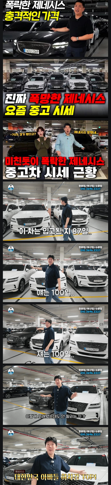

???
100일동안 안팔렸으면 가격을 낮춰 ㅡㅡ

???
100일동안 안팔렸으면 가격을 낮춰 ㅡㅡ
고마웡! 잘하면 유지 할 수도 있겠다
입털면 팔수있어!!
안팔리면 가격을 낮춰 가 아니고
가격을 낮춰 놓고 요즘 제네시스 이렇게 감가됐습니다 하는 영상일텐데?
bmw 5시리즈 부터는 고급휘발유 넣어야함?
안넣고 타는사람도 많음
압축비가 어쩌고 저쩌고 같은거 잘 몰라도 모든 고급유 사양 차량은 메뉴얼에 고급유만 넣으라고 적혀 있읍니다
넣어야함? X
넣어야 제조사가 세팅한 최적의 성능이 나옴? O
일반유랑 왔다갔다 하면 어떰? 절대 안됌
고급 휘발유는 "고급"인가? X
왔다갔다해도 됨
고급 일반 반반 섞으면 옥탄가도 평균이 되고
차량이 요구하는 옥탄가보다
우리나라 고급유 옥탄가가 더 높기땜에
대충 반반 섞어도 제 성능 나옴
내가 캐나다 사는데 한국 고급은 옥탄가가 얼마임? 진짜 몰라서...
뭐 옥탄가 훨씬 높으면 섞는건 괜찮지, 일반유만 넣다 고급만 넣다 왔다갔다 하는거 아니면
100 넘었던거 같은데
예전에 계산해봤을땐
일반유/고급유 반반 넣어도
권장 옥탄가 만족했었던걸로 기억함
캐나다 울트라급을 파네...
엔진라인업따라다른데 기본적으로 전라인업 고급유넣으면 좋은데 20i정도는 일반유넣어도 상관없음 30i부턴 반필수 수준이긴한데 10만 이내로 던질꺼면 뭐 M에도 일반유넣고타도 되지
320i인데 2만까지 고급유넣다 일반유 넣었는데 걍 느낌인건진 모르겠다만 일반유넣은 이후부터 연비가 살짝 떨어지긴함 나머진 진동 노킹 이런거 하나도 모르겠음 걍 첨부터 일반유 넣고 5년째에 파는게 최고
같은 엔진에 설계출력을 달리한 라인업이 많으므로 비교적 저출력인 20라인에는 일반유를 넣어도 무방하다는게 업계 중론 (물론 고급유가 좋음)
30, 35 ,40 라인에는 고급유 권장
한국 휘발유의 경우 일반휘발유도 고품질인 편에 속하는 편입니다
ㅅㅂ.. 부모님이 g80사주셨는데 진짜 사주시기만하고 관리는 내가 하는데 진짜 쥐좆월급으로 몰고다닐차는 아님 여자친구랑 데이트할때만 끌고다니고 평일에는 뚜벅이임
유지비 때문에??
기름값이 개빡쌤 연비 7.8나옴
G80좋던데 방지턱에서 k7은 덜커덩 쿵 이면 g80은 턱 쿵 이던데
ㄹㅇ 모델3이 답이다

요새 추세가 기아 테슬라 현대순 느낌인가
중고가 싸서 노리는 사람들은 기름값 생각을 안할수가 없겠지 신차 턱턱 뽑는 사람들이나 재력되는거지
이제 카푸어들이 테슬라 사니까 안팔림
제네시스 사서 유지비 감당 못하고 방출인데
테슬라는 유지비 ㅈㄴ쌈
감가방어가 잘되던 모델이 이전에 비해 맥을 추지 못하는거지, 그래도 여전히 감가 방어율은 우수한 편.
신차대비 폭락은 현기에선 카니발, 모하비 정도?
아님 이슈 가득한 그랑콜레오스, 필랑트,qm6
잊혀진 쉐보레 트래버스, 이쿼녹스 ㅠㅠ
제네시스야 워낙 고급+대형이라 감가 처맞기 존나 좋지
저거 유지비 생각하면
일반인들이 사기 힘듬
아반떼 신차가로....아니 말하다보니 이상하네 옜날도 아니고 2년전만 해도 최소 그랜져였는데
아반떼 신차가로 GV70 G80 중고 살 수 있는데
1년에 들어가는 유지비가 최소 800만원임 최소치임
제네시스라인은 옛 1세대도 유지비 높음
가격싸다고 무지성 데려오면 젊은 회사원은 감당하기 힘들어
내가 중고로 사서 타고 다니는 제네시스 G80이 이번에 신차로 뽑은 풀옵 캐스퍼 보다 쌈
내가 고속화 도로 한 8할? 기준으로 80 나이스 하게 유지하고 다니면 평균 14 살짝 밟는다 12? 시내바리 하면 진짜 기름 먹는게 눈에 보이긴함 근데 진짜 이래저래 넉넉잡고 한달 30은 안들어갈듯